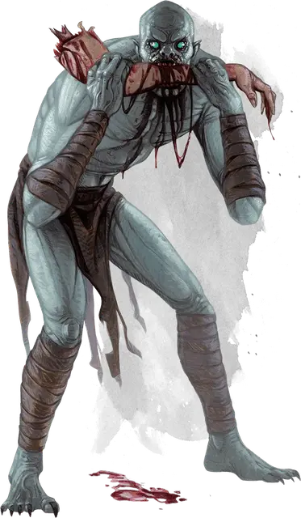

Упырь
Ghoul
Средняя Нежить, хаотично-злая

Класс Доспеха 12
Хиты 22 (5к8)
Скорость 30 футов
| мод | спас | ||
|---|---|---|---|
| СИЛ | 13 | +1 | +1 |
| ЛОВ | 15 | +2 | +2 |
| ТЕЛ | 10 | +0 | +0 |
| мод | спас | ||
|---|---|---|---|
| ИНТ | 7 | −2 | −2 |
| МДР | 10 | +0 | +0 |
| ХАР | 6 | −2 | −2 |
Иммунитет к урону яд
Иммунитет к состояниям очарование, отравление, истощение
Чувства тёмное зрение 60 футов, пассивное Восприятие 10
Языки Общий
Опасность 1 (200 опыта)
Бонус мастерства +2
Среда обитания Болото, Город, Подземье
Действия
Укус. Рукопашная атака оружием: +2 к попаданию, досягаемость 5 футов, одно существо. Попадание: 9 (2к6 + 2) колющего урона.
Когти. Рукопашная атака оружием: +4 к попаданию, досягаемость 5 футов, одна цель. Попадание: 7 (2к4 + 2) рубящего урона. Если цель — существо, не являющееся эльфом или нежитью, она должна преуспеть в спасброске Телосложения Сл 10, иначе станет парализованной на 1 минуту. Цель может повторять этот спасбросок в конце каждого своего хода, оканчивая эффект на себе при успехе.
Описание
Упыри бродят по ночам группами, движимые жаждой человеческой плоти.
Пожиратели плоти. Как черви или жуки-падальщики, упыри изобилуют там, где пировала смерть и властвует разложение. Упыри часто наведываются в места, где могут разжиться мертвечиной или вырванными из тела внутренностями. Если упырь не может найти мертвечину, он преследует живых. Упырь не может насытиться пожранным трупом, но, движимый неутолимым голодом, находится в постоянном поиске пищи. Плоть упыря не гниёт и не разлагается, и эта тварь, находясь без пищи в склепе или усыпальнице, может ожидать неисчислимые века.
Порождения Бездны. Упыри ведут своё происхождение из Бездны. Доресэйн, первый из их породы, был некогда эльфом, поклонявшимся Оркусу. Обратившись против собственного народа, он устраивал пиры из плоти человекоподобных рас во славу Демонического Повелителя Нежити. В награду за служение Оркус превратил Доресэйна в первого упыря. Доресэйн ревностно служил Оркусу в Бездне, превращая в упырей других слуг демонического повелителя, вплоть до вторжения Йеногу, демонического повелителя гноллов, лишившего Доресэйна его владений. Когда Оркус не заступился за него, Доресэйн обратился к эльфийским богам, моля о спасении, и те из жалости спасли его от неминуемой гибели. С тех пор эльфы неподвластны парализующим прикосновениям упырей.
Вурдалаки. Оркус иногда вливает в упыря больше энергии Бездны, превращая его в вурдалака. Упыри немногим умнее диких зверей, а вурдалак хитёр и может заставить группу упырей выполнять его команды.